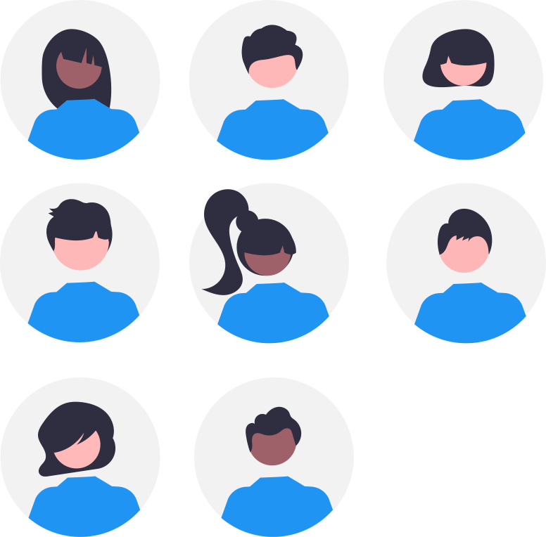

Cahier de texte
Avertissement :#
 Ce site s'adresse au groupe des élèves de première du lycée Notre Dame du Mur qui suivent l'enseignement de spécialité des Sciences de l'Ingénieur.
Ce site s'adresse au groupe des élèves de première du lycée Notre Dame du Mur qui suivent l'enseignement de spécialité des Sciences de l'Ingénieur.

A LIRE :
-
ChatGPT : « Non, le métier de développeur informatique n’est pas mort !
-
Sortir de sa zone de confort pour apprendre afin de se réaliser ;
Du 03/05#
- Correction évaluation schéma cinématique "Casse-écrou" et "Manequin choc piéton" ;
- Remédiation schéma cinématique "Coupe-tube" ;
- Correction évaluation schéma cinématique "Imprimante 3D" ;
- TD Cinématique Ouvre Porte Basculante :
- Application au vélo elliptique : Faire la 1^ère partie pour le 11/05
-
Devoir Maison en électricité :
-
Devoir Maison en programmation :
- Finir la programmation des objets connectés avec la carte QuickPi et transmettre un
notebook.ipynbcomplété ;
- Finir la programmation des objets connectés avec la carte QuickPi et transmettre un
-
Réviser et s'entrainer encore pour une évaluation à partir de la page newecligne/electricité ;
Du 12/04#
-
Faire les activités du notebook
Robotique-La_fonction_traiter_en_µPython-BBC_microbit.ipynb; -
Poursuivre la programmation des objets connectés avec la carte QuickPi à partir de la plateforme Castor Informatique France-IOI en utilisant votre code personnel pour ce Parcours ; conserver progressivement une trace de vos scripts dans un
notebook.ipynb; -
Activités de projets avec BBC micro:bit :
-
Devoir Maison en électricité :
-
Devoir Maison en programmation :
- Finir la programmation des objets connectés avec la carte QuickPi et transmettre un
notebook.ipynbcomplété ;
- Finir la programmation des objets connectés avec la carte QuickPi et transmettre un
-
Réviser et s'entrainer encore pour une évaluation à partir de la page newecligne/electricité ;
Du 05/04#
-
Activités de projets :
-
Progresser en programmation des objets connectés avec la carte QuickPi :
- à partir de la plateforme Castor Informatique France-IOI en utilisant le code
g9c6nn6ffourni pour débuter le Parcours_2 : - notez, transmettez-moi et conservez votre code personnel pour ce Parcours pour y retourner d'une fois sur l'autre ;
- conserver progressivement une trace de vos scripts dans un
notebook.ipynb;
- à partir de la plateforme Castor Informatique France-IOI en utilisant le code
-
Faire les activités du notebook
Robotique-La_fonction_traiter_en_µPython-BBC_microbit.ipynb;
- Faire la mise à jour d'Obsidian pour découvrir les canvas ;
- Réviser et s'entrainer pour une évaluation à partir de la page newecligne/electricité ;
- Faire les exercices Circuits_Electriques_Exercices_6-12.pdf ;
Du 17 au 24/03#
-
Activités de projets :
-
Progresser en programmation des objets connectés avec la carte QuickPi :
- à partir de la plateforme Castor Informatique France-IOI en utilisant le code
g9c6nn6ffourni pour débuter le Parcours_2 : - notez, transmettez-moi et conservez votre code personnel pour ce Parcours pour y retourner d'une fois sur l'autre ;
- conserver progressivement une trace de vos scripts dans un
notebook.ipynb;
- à partir de la plateforme Castor Informatique France-IOI en utilisant le code
-
Lire Circuits_Electriques-Introduction.pdf et Faire les activités du notebook
Circuit_Electrique.ipynb;
- Faire la mise à jour d'Obsidian pour découvrir les canvas ;
- Réviser et s'entrainer pour une évaluation à partir de la page newecligne/electricité ;
- Faire les exercices Circuits_Electriques_Exercices_6-12.pdf ;
Du 09/03#
- Activités de projets :
Le 08/03#
- Evaluation sur la modélisation des liaisons cinématiques ;
Le 03/03#
- Evaluation sur la programmation en Python ;
- Se préparer pour une évaluation sur la modélisation des liaisons cinématiques pour le 08/03 ;
- Faire la mise à jour d'Obsidian pour découvrir les canvas ;
Les 01 et 02/03#
- Synthèse finale du parcours_1 de la programmation de la carte QuickPi ;
- Correction des shémas cinématiques du TP_Scie_Sauteuse ;
- Correction d'exercices de la page schéma cinématique ;
- Projets...
- Participation aux activités d'escape game pour l'accueil des troisièmes le 02/03 ;
- Se préparer pour une évaluation sur la programmation en Python pour le 03/03 et la modélisation des liaisons cinématiques pour le 08/03 ;
- Faire la mise à jour d'Obsidian pour découvrir les canvas ;
Du 01/02#
- Synthèse partielle du parcours_1 de la programmation de la carte QuickPi ;
-
Modélisation cinématique des mécanismes :
- TD_Serre_Joint à partir de la maquette Serre_Joint_3D ;
- TP_Scie_Sauteuse à partir de la maquette Scie Sauteuse ERM ;
-
Faire les exercices de la page schéma cinématique ;
- Finir les exercices de la page schéma cinématique ;
- Poursuivre la programmation de la carte QuickPi avec votre code personnel et conserver progressivement une trace de vos scripts dans un
notebook.ipynb; ;
Les 26 et 27/01#
-
Synthèse du tableau des liaisons cinématiques et des assemblages équivalents sur OneShape Liaisons_Complet ;
-
Lire le cours et faire les exercices de la page schéma cinématique ;
-
S'initier à la programmation des objets connectés avec la carte QuickPi :
- à partir de la plateforme Castor Informatique France-IOI en utilisant le code
fd48mmy5fourni pour débuter le Parcours_1 ; - regardez la vidéo de prise en main de l'interface ;
- notez, transmettez-moi et conservez votre code personnel pour ce Parcours pour y retourner d'une fois sur l'autre ;
- à partir de la plateforme Castor Informatique France-IOI en utilisant le code
- Finir les exercices contacts et liaisons
- Poursuivre la programmation de la carte QuickPi avec votre code personnel et conserver progressivement une trace de vos scripts dans un
notebook.ipynb; ;
Les 18 et 25/01#
-
Modélisation cinématique des mécanismes, les liaisons :
-
Compléter le tableau des liaisons cinématiques à partir des vidéos de la playlist Liaisons et des cours du site NEWECLIGNE concernant les contacts et les liaisons ;
-
Copier le document Onshape Liaisons et y créer des assemblages représentatifs des différentes liaisons...
-
-
Finir et transmettre l'exercice du SUNSEARIDER;
Le 04/01#
-
Retour sur les exercices d'énergétique à remettre et réalisation dans Obsidian avec le module complémentaire Spaced Repetition de flashcards partagées pour se préparer à une évaluation...
-
mini-projet "Modeliser_ma_rue" : point d'étape du sprint 1, précisions de contraintes dimensionnelles des portes et fenêtres puis reprise en équipe du sprint 1 pour valider le test qu'un assemblage d'immeubles pris dans chaque équipe constitue une rue probable ;
-
Rendre les exercices supplémentaires sur les principales puissances et l'application au robot Camper Trolley + Camper_DT1.pdf ;
-
Poursuivre l'apprentissage du cours sur l'énergétique et faire les exercices du site NEWECLIGNE en particulier le robot effibot, la pergolas bioclimatique et le SUNSEARIDER;
Le 08/12#
- mini-projet "Modeliser_ma_rue" : synthèse du sprint 0, prise en main du workflow ;
- Finir l'application au robot Camper Trolley + Camper_DT1.pdf ;
- Faire les exercices supplémentaires sur les principales puissances ;
- Poursuivre l'apprentissage du cours sur l'énergétique et faire les exercices du site NEWECLIGNE ;
Du 01 au 07/12#
- Faire les exercices supplémentaires sur les principales puissances ;
- Poursuivre l'apprentissage du cours sur l'énergétique et faire les exercices du site NEWECLIGNE ;
Le 30/11#
- Corrections et bilan du trimestre...
- Finir l'application au robot Camper Trolley + Camper_DT1.pdf ;
- mini-projet "Modeliser_ma_rue" ;
- Faire les exercices supplémentaires sur les principales puissances ;
- Poursuivre l'apprentissage du cours sur l'énergétique et faire les exercices du site NEWECLIGNE ;
Le 25/11#
- Relire le cours sur les principales puissances et lire le document ressource sur l'énergie chimique pour faire l'application au robot Camper Trolley + Camper_DT1.pdf ;
- Explorer d'avantage les fonctionnalités de l'application multiplateforme Obsidian ;
- Rechercher qui est Jean-Marc JANCOVICI ? Quelle est son actualité ? Quelles sont ses thèses ? Fait-il l'unanimité ? -> Réaliser une note littéraire dans Obsidian ;
- Faire les exercices supplémentaires sur les principales puissances ;
Le 24/11#
- Evaluation sur Energie-Puissance-Rendement ;
- Explorer d'avantage les fonctionnalités de l'application multiplateforme Obsidian ;
- Rechercher qui est Jean-Marc JANCOVICI ? Quelle est son actualité ? Quelles sont ses thèses ? Fait-il l'unanimité ? -> Réaliser une note littéraire dans Obsidian ;
- Faire les exercices supplémentaires sur les principales puissances ;
Le 23/11#
- Correction de l'étude d'un mini-compresseur en observant le système et sa maquette numérique -> Réaliser un schéma de la chaine de puissance présentant les grandeurs d'efforts/flux et leurs unités avec Escalidraw dans Obsidian ;
- Explorer d'avantage les fonctionnalités de l'application multiplateforme Obsidian ;
- Rechercher qui est Jean-Marc JANCOVICI ? Quelle est son actualité ? Quelles sont ses thèses ? Fait-il l'unanimité ? -> Réaliser une note littéraire dans Obsidian ;
- Se préparer pour une évaluation sur Energie-Puissance-Rendement ;
- Faire les exercices supplémentaires sur les principales puissances ;
Le 18/11#
- Lire le cours sur les principales puissances et appliquer à l'étude d'un mini-compresseur en observant le système et sa maquette numérique ;
- Explorer d'avantage les fonctionnalités de l'application multiplateforme Obsidian ;
- Rechercher qui est Jean-Marc JANCOVICI ? Quelle est son actualité ? Quelles sont ses thèses ? Fait-il l'unanimité ?
- Faire les exercices supplémentaires sur les principales puissances
Le 17/11#
- Correction de l'exercice 7 -> Réaliser le schéma avec Escalidraw dans Obsidian ;
- Explorer d'avantage les fonctionnalités de l'application multiplateforme Obsidian ;
- Rechercher qui est Jean-Marc JANCOVICI ? Quelle est son actualité ? Quelles sont ses thèses ? Fait-il l'unanimité ?
Le 16/11#
- Lire le cours sur les différentes formes d'énergie et faire les exercices ;
- Explorer d'avantage les fonctionnalités de l'application multiplateforme Obsidian ;
- Finir les exercices ;
- Rechercher qui est Jean-Marc JANCOVICI ? Quelle est son actualité ? Quelles sont ses thèses ? Fait-il l'unanimité ?
Les 09 et 10/11#
- Synthèse et correction des exercices du TAF :
- Evaluation sur les fonctions logiques de la chaine d'information ;
- Présentation d'un tutoriel pour l'application multiplateforme Obsidian -> Avec l'aide de ShortCut d'automatisation Capter idée et Partager Média collecter des données sur une note du jour dans votre coffre d'Obsidian localisé sur votre iPad ;
-
Explorer d'avantage les fonctionnalités de l'application multiplateforme Obsidian
-
Finir l'expérimentation des Fonctions_Logiques-Exercice_Leve_Vitre_Electrique.ipynb : Convertir le
notebook.ipynbde Carnets complété ennote.mdd'Obsidian et les transmettre par mail. Télécharger le notebook de l'exercice d'application
Les 13, 14/10 : (1h x 2)#
-
Synthèse de Logique de la chaine d'information ->Décrire la logique d'un Va & Vient... ; Télécharger le notebook du cours
-
Expérimenter Fonctions_Logiques-Exercice_Leve_Vitre_Electrique.ipynb et le transmettre par mail. Télécharger le notebook de l'exercice d'application
-
Découverte de l'application multiplateforme Obsidian
-
Poursuivre Fonctions_Logiques-Exercice_Leve_Vitre_Electrique.ipynb et le transmettre par mail. Télécharger le notebook de l'exercice d'application
-
Se préparer pour une évaluation sur les fonctions logiques pour le 21/10 en faisant les exercices d'entrainement supplémentaires :
Le 12/10 : (2h)#
- Poursuite de Logique de la chaine d'information ->Décrire la logique d'un Va & Vient... ; Télécharger le notebook du cours
- Poursuivre Fonctions_Logiques-Exercice_Leve_Vitre_Electrique.ipynb et le transmettre par mail. Télécharger le notebook de l'exercice d'application
Le 07/10 : (1h)#
-
Correction de l'évaluation en analyse fonctionnelle SYSML + numération et codage de l'information Télécharger le notebook de l'exercice d'application ;
-
Correction des questions du notebook Fonctions_Logiques-Google_doodle.ipynb ;
-
Poursuite de Logique de la chaine d'information ->Décrire la logique d'un Va & Vient... ; Télécharger le notebook du cours
- Commencer Fonctions_Logiques-Exercice_Leve_Vitre_Electrique.ipynb et le transmettre par mail. Télécharger le notebook de l'exercice d'application
Du 29/09 au 06/10 : (1h x2 + 2h)#
- Faire les activités pratiques du notebook Logique de la chaine d'information ->Décrire la logique d'un Va & Vient... ; Télécharger le notebook du cours
- Répondre aux questions du notebook Fonctions_Logiques-Google_doodle.ipynb et le transmettre par mail. Télécharger le notebook de l'exercice d'application
Le 28/09 : (2h)#
-
Evaluation en analyse fonctionnelle SYSML + numération et codage de l'information ;
-
Logique de la chaine d'information ->Décrire la logique d'un Va & Vient... ; Télécharger le notebook du cours
- Répondre aux questions du notebook Fonctions_Logiques-Google_doodle.ipynb et le transmettre par mail. Télécharger le notebook de l'exercice d'application
Du 21 au 23/09 : (2h + 2x1h)#
- Correction du travail demandé... ;
- Focus sur la chaine d'information, notion de numération ->Faire les exercices de conversion... ; Télécharger le notebook du cours
- Finir les exercices de conversion ;
- Se préparer pour une évaluation en analyse fonctionnelle SYSML + numération et codage de l'information pour le mercredi 28/09
Du 14 au 16/09 : (2h + 2x1h)#
-
Cours Analyse Fontionnelle Interne -> découvrir plus avant le SysML et l'outil de dessin vectoriel Draw.io - Diagrams.net ;
Télécharger le notebook du cours -
Réviser les notions de SYSML sur le site NewEcligne ;
-
Explorer plus avant des fonctionnalités des Notebook Jupyter
Finir sur drawio un dessin présentant les chaines d'information et de puissance de la bouilloire avec l'application Draw.io - Diagrams.net puis l'insérer dans une cellule markdown de votre notebook du cours Analyse Fontionnelle Interne et le transmettre par mail.
-
Réviser les notions de SYSML sur le site NewEcligne ;
-
Explorer plus avant des fonctionnalités des Notebook Jupyter
Les 08 et 09/09 : (2x1h)#
-
Finir la mise en place de votre classeur numérique pour la SI sur GitHub -> Reprendre depuis un des PC du labo de SI via GitPod dans l'environnement de Visual Studio Code et en utilisant des notebook jupyter ;
-
Cours Analyse Fontionnelle Externe -> découvrir le SysML et l'outil de dessin vectoriel Draw.io - Diagrams.net ;
Télécharger le notebook du cours
Reproduire le diagramme des cas d'utilisation de la bouilloire avec l'application Draw.io - Diagrams.net puis l'insérer dans une cellule markdown de votre notebook du cours Analyse Fontionnelle Externe et le transmettre par mail.
Le 07/09 : (2h)#
- Poursuivre la mise en place d'un classeur numérique pour la SI sur GitHub -> Se questionner : dépôt public ou privé, poids d'un mail avec PJ, ... ? ;
- Finir la mise en place de votre classeur numérique pour la SI sur GitHub depuis la tablette iPad via GitPod dans l'environnement de Visual Studio Code ;
Le 02/09 (1h)#
- Accueil -> remplir une fiche d'informations ;
- Présentation de la matière -> préciser le rôle des ingénieurs dans la société ;
- Initier un classeur numérique pour la SI sur GitHub -> numériser votre fiche d'informations au format MarkDown et la transmettre par mail ;
Finaliser votre fiche d'informations au format MarkDown et la transmettre par mail ;